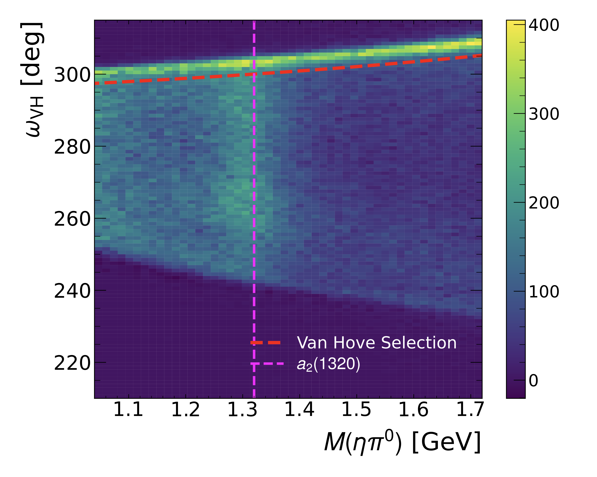
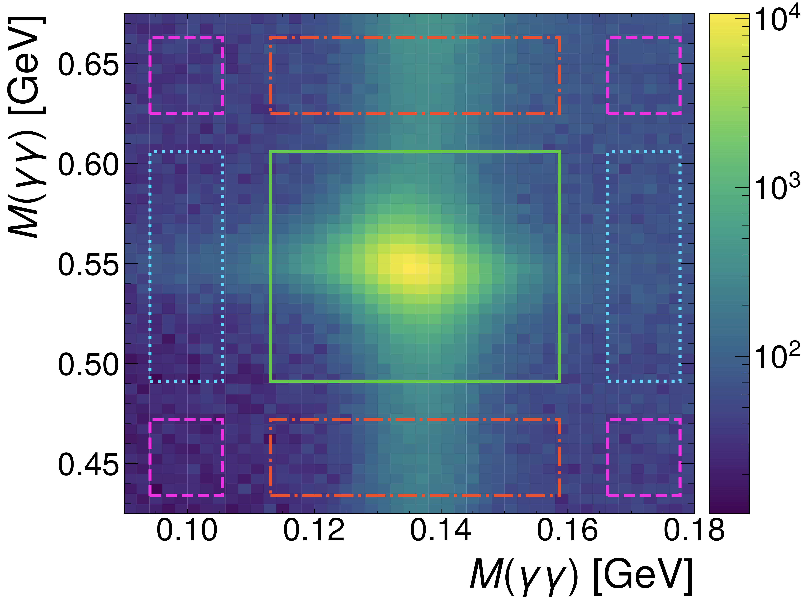
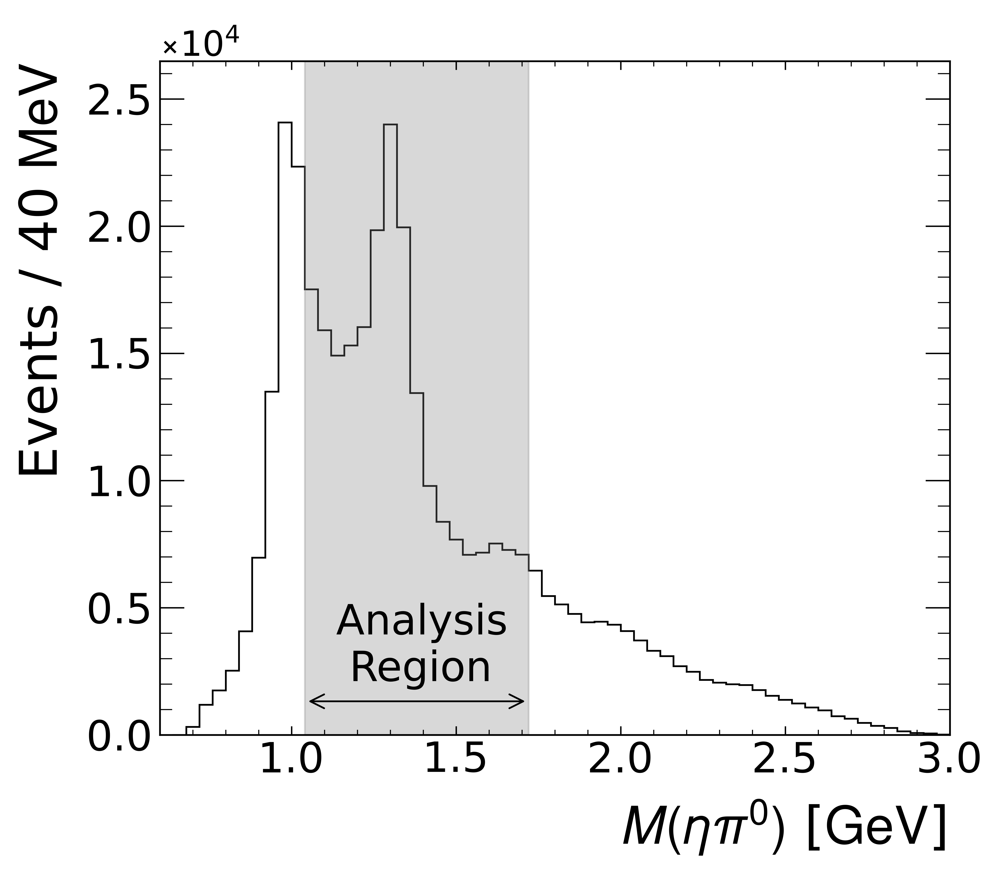
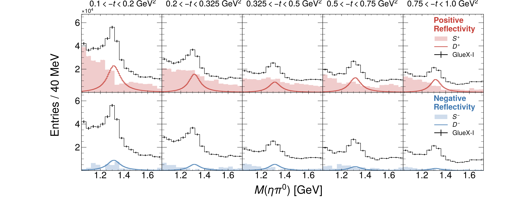
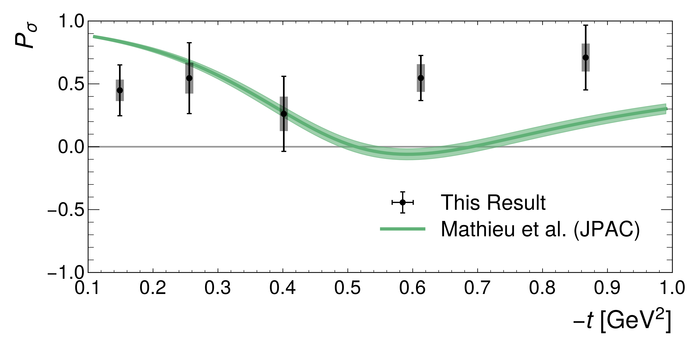
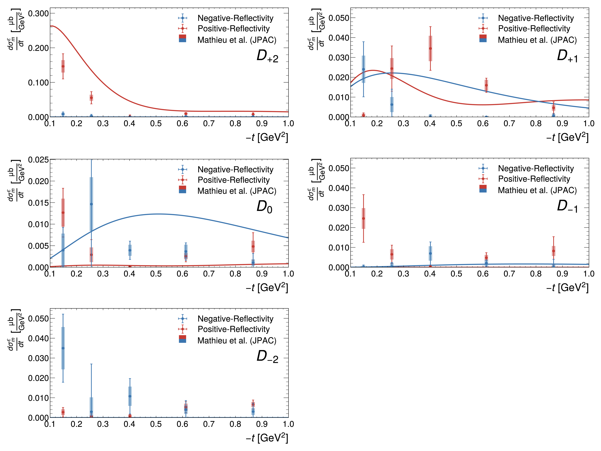

First Measurement of $a^0_2(1320)$ Polarized Photoproduction Cross Section
Abstract:
We measure for the first time the differential photoproduction cross section $d\sigma/dt$ of the $a_2(1320)$ meson at an average photon beam energy of 8.5 GeV, using data with an integrated luminosity of $104~\textrm{pb}^{-1}$ collected by the GlueX experiment. We fully reconstruct the $\gamma p \to \eta\pi^0 p$ reaction and perform a partial-wave analysis in the $a_2(1320)$ mass region with amplitudes that incorporate the linear polarization of the beam. This allows us to separate for the first time the contributions of natural- and unnatural-parity exchanges. These measurements provide novel information about the photoproduction mechanism, which is critical for the search for spin-exotic states.Journal: Phys. Rev. C112 (2025) 1, 015204
arXiv: arXiv:2501.03091
HEPdata: link
|

Phys. Rev. C112 (2025) 1, 015204: downloads png pdf |
Figure 1a:
Distribution of the Van Hove angle $\omega_\mathrm{VH}$ versus $M(\eta\pi^0)$ for selected $\gamma p \to \eta \pi^0 p$ events. The enhancement at large $\omega_\mathrm{VH}$ is due to target-excitation events, as described in the text. The dashed red curve illustrates the selection used to exclude these events. The nominal mass of the $a_2(1320)$ meson is shown by the vertical dashed line. |
|

Phys. Rev. C112 (2025) 1, 015204: downloads png pdf |
Figure 2a:
(Left) Two-dimensional distribution of the mass of $\eta$ candidates versus the mass of $\pi^0$ candidates. The colored boxes indicate (green) the signal region, (red) the $\eta$ sideband, (cyan) the $\pi^0$ sideband, and (magenta) the corner sidebands. (Right) The invariant mass distribution for $\eta\pi^0$ candidate events after all event selections and background subtractions have been applied. Clear peaks around the nominal $a_0(980)$ and $a_2(1320)$ masses are observed. The shaded region around the $a_2(1320)$ indicates the mass range used for the partial-wave analysis described in the text. |
|

Phys. Rev. C112 (2025) 1, 015204: downloads png pdf |
Figure 2b:
io (Left) Two-dimensional distribution of the mass of $\eta$ candidates versus the mass of $\pi^0$ candidates. The colored boxes indicate (green) the signal region, (red) the $\eta$ sideband, (cyan) the $\pi^0$ sideband, and (magenta) the corner sidebands. (Right) The invariant mass distribution for $\eta\pi^0$ candidate events after all event selections and background subtractions have been applied. Clear peaks around the nominal $a_0(980)$ and $a_2(1320)$ masses are observed. The shaded region around the $a_2(1320)$ indicates the mass range used for the partial-wave analysis described in the text. |

Phys. Rev. C112 (2025) 1, 015204: downloads png pdf |
Figure 3a:
Fit quality in the bin $0.1<-t<0.2$ $\textrm{GeV}^2$. Black dots with error bars represent the measured GlueX data. Green shaded histograms show the reconstructed phase-space distributed Monte Carlo dataset weighted by the fit results. A $\chi^2$ per bin between these two distributions is shown in red. |
|

Phys. Rev. C112 (2025) 1, 015204: downloads png pdf |
Figure 4a:
Intensities of the $S_0$-wave amplitudes (shaded histograms) and the coherent sums of the $D$-wave amplitudes (solid curves) with positive (top row) and negative reflectivity (bottom row) for individual $t$ bins (columns). The total measured intensity corrected for experimental acceptance is shown by the black histogram where the error bars are purely statistical. Results for individual fit results in bins of $-t$ for coherent sums of the positive and negative reflectivity fit components. The total measured intensity, ad the $S$- and $D$-wave fit components as described in the text are shown separately. |

Phys. Rev. C112 (2025) 1, 015204: downloads png pdf |
Figure 5a:
Differential cross section $d\sigma/dt$ for the reaction $\gamma p\to a_2(1320) p$ for $8.2 < E_\gamma < 8.8\,$GeV (black points). The positive- and negative-reflectivity components of the cross section are shown as red and blue points, respectively. Shaded boxes indicate statistical uncertainties as determined from bootstrapping the data sample, while the error bars indicate the total uncertainties including systematics. The curves show the prediction from the TMD model from Ref. [46] using the same color code. |
|

Phys. Rev. C112 (2025) 1, 015204: downloads png pdf |
Figure 6a:
The parity asymmetry defined in Eq. (4) calculated from the values shown in Fig. 5 (points with error bars). Values close to $+1/-1$ would indicate a dominance of positive/negative-reflectivity production. The curve shows the prediction from the TMD model from Ref. [46] |

Phys. Rev. C112 (2025) 1, 015204: downloads png pdf |
Figure 7a:
Differential cross section $d\sigma/dt$ for the reaction $\gamma p\to a_2(1320) p$ for $8.2 < E_\gamma < 8.8\,$GeV (black points), compared to the previous measurements of Ref. [24] for $3.5 < E_\gamma < 4.5\,$GeV (orange) and $4.5 < E_\gamma < 5.5\,$GeV (magenta). The curve shows the prediction from the TMD model from Ref. [46] for $8.2 < E_\gamma < 8.8\,$GeV. |
|

Phys. Rev. C112 (2025) 1, 015204: downloads png pdf |
Figure 8a:
Differential $a_2(1320)$ cross sections $d\sigma_m/dt$ for positive (red) and negative (blue) reflectivity and for each spin-projection $m$. Shaded boxes indicate statistical uncertainties as determined from bootstrapping the data sample, while the error bars indicate the total uncertainties including systematics. The curves show the prediction from the TMD model from Ref. [46] using the same color code. |
{kind=link}
{kind=link}
{kind=link}
{kind=link}
{kind=link}
{kind=link}